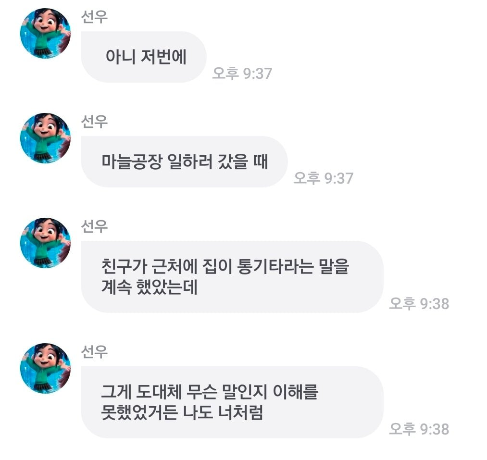
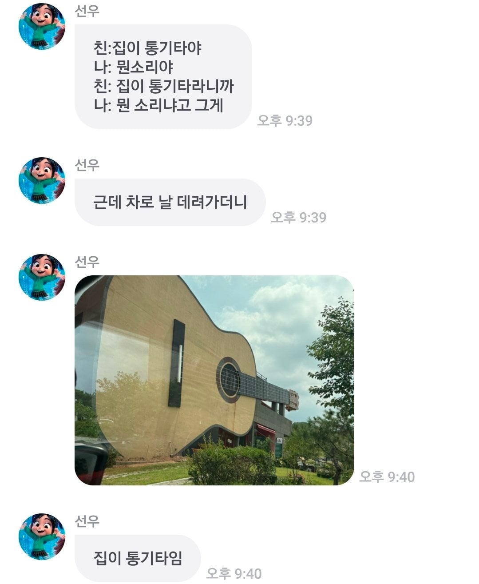

이천 통기타하우스 검색하면 나오네


이천 통기타하우스 검색하면 나오네
두개가 어떻게 다른지 알려줄수 있을까
클래식 기타가 사이즈가 좀 더 크고 헤드가 다름
현도 클래식은 나일론 줄 쓰고 통기타는 금속 줄이랑 같이 씀
사이즈가 좀 많이 크네 역시 클래식인가
아 그러네 헤드가 다르네
헤드에 구멍 뚫려 있고 줄이 나일론줄이면 클래식기타
클레식 기타는 클레식하고
통기타는 통이커!
ㄴㄴ 통기타는 어쿠스틱 기타와, 클래식 기타를 아우르는 말이고
정확히는 어쿠스틱,클래식으로 구분해야함.
그러니까 통기타라고 해도 되는거임
감바스 생각나는 댓글이네
줄 튕겨보고싶다
전깃줄임
그럼 저건 일렉기타야?
띵. 사냥 시작
진짜네
사진만 없으면 기타로 오토바이를 타자급이네
경기도 이천 세라기타문화관
저거 연주 됨 무슨 감 따는 작대기 같이 생긴걸로 여럿이서 연주하는 공연 있었음
소리 어떰?
그냥 상상으로 거짓말 한거라 대충 소리 좋다고 할게
야이색끼얔ㅋㅋㅋㅋㅋㅋㅋㅋㅋㅋㅋㅋㅋㅋㅋ
나도 들어봤는데 제법 기타같은 소리 나더라!
폰소리 ㄷㄷㄷ
집이 통
아 이런 수미상관 개그 좋아
자매품: 근육통엔 약이 없대
자세히 보니까 통기타 아니고 클래식기타네